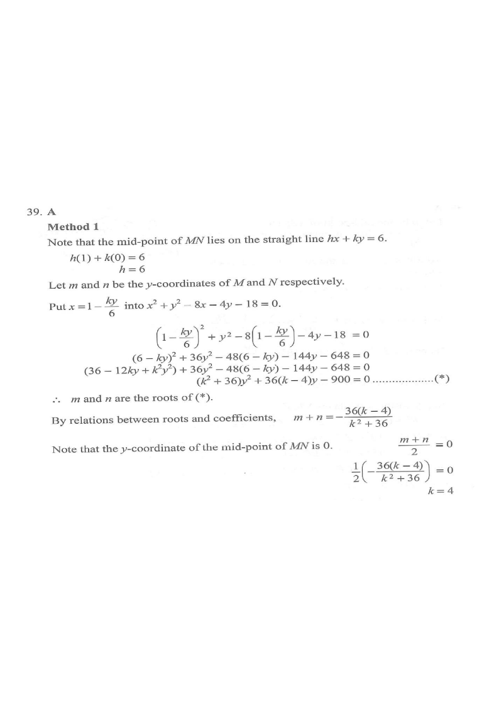

DSE 2023 · 卷二 · 第39題
圓的弦的中點
圓形幾何 · 圓與直線 · 選擇題
題目
直線 $hx+ky=6$ 與圓 $x^2+y^2-8x-4y-18=0$ 相交於 $M$、$N$ 兩點，其中 $h$、$k$ 為常數。若 $MN$ 的中點坐標為 $(1,0)$，求 $k$。
A.
$4$
B.
$6$
C.
$9$
D.
$12$

原題附圖
題解
第 1 步
中點在直線上
中點 $(1,0)$ 在弦 $MN$ 上，故代入 $hx+ky=6$：\[ h(1)+k(0)=6\Rightarrow h=6 \]直線為 $6x+ky=6$。
第 2 步
代入圓方程
由 $6x+ky=6$ 得 $x=1-\dfrac{ky}{6}$，代入圓方程並乘 $36$：\[ (6-ky)^2+36y^2-48(6-ky)-144y-648=0 \]整理得\[ (k^2+36)y^2+36(k-4)y-900=0 \]
第 3 步
用兩根的和小於中點
韋達定理
\(y_1+y_2=-\frac{b}{a}\)
二次方程的兩根之和等於 $-\dfrac{b}{a}$。
設 $M$、$N$ 的 $y$ 坐標為 $m$、$n$，則\[ m+n=-\frac{36(k-4)}{k^2+36} \]中點的 $y$ 坐標為 $\dfrac{m+n}{2}=0$，故 $m+n=0$：\[ -36(k-4)=0\Rightarrow k=4 \]
第 4 步
驗算
$k=4$ 時方程為 $52y^2-900=0$，兩根互為相反數，中點 $y=0$；再由直線得 $x=1$，與題設吻合。
答案
A
（$k=4$）
練習
同類新題
題目.
圓 $x^2+y^2=25$ 被直線 $y=x+c$ 所截的弦的中點在 $y$ 軸上，求 $c$。
顯示題解
第 1 步.
中點在 $y$ 軸 ⇒ 兩交點 $x$ 坐標之和為 $0$
第 2 步.
代入得 $2x^2+2cx+c^2-25=0$，$x_1+x_2=-c$
答案：$c=0$，即直線 $y=x$
‹ 上一題
目錄
下一題 ›